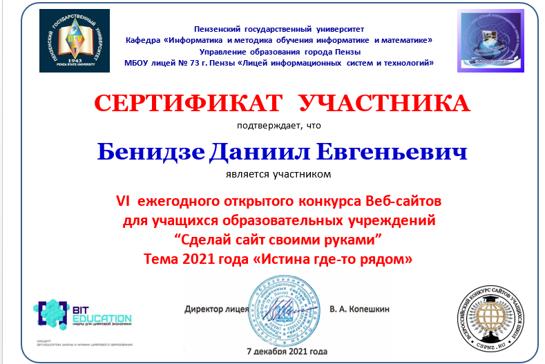
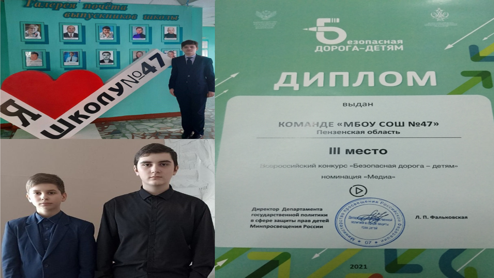
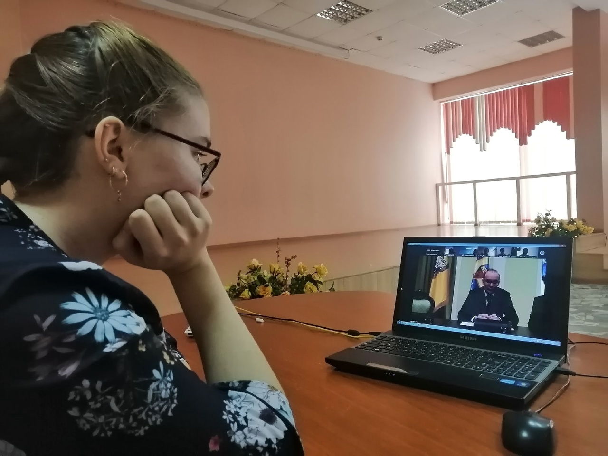
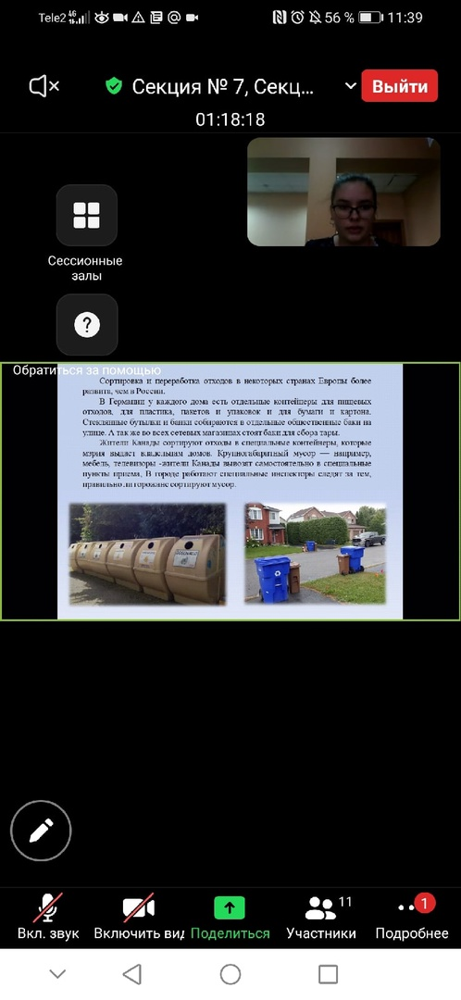
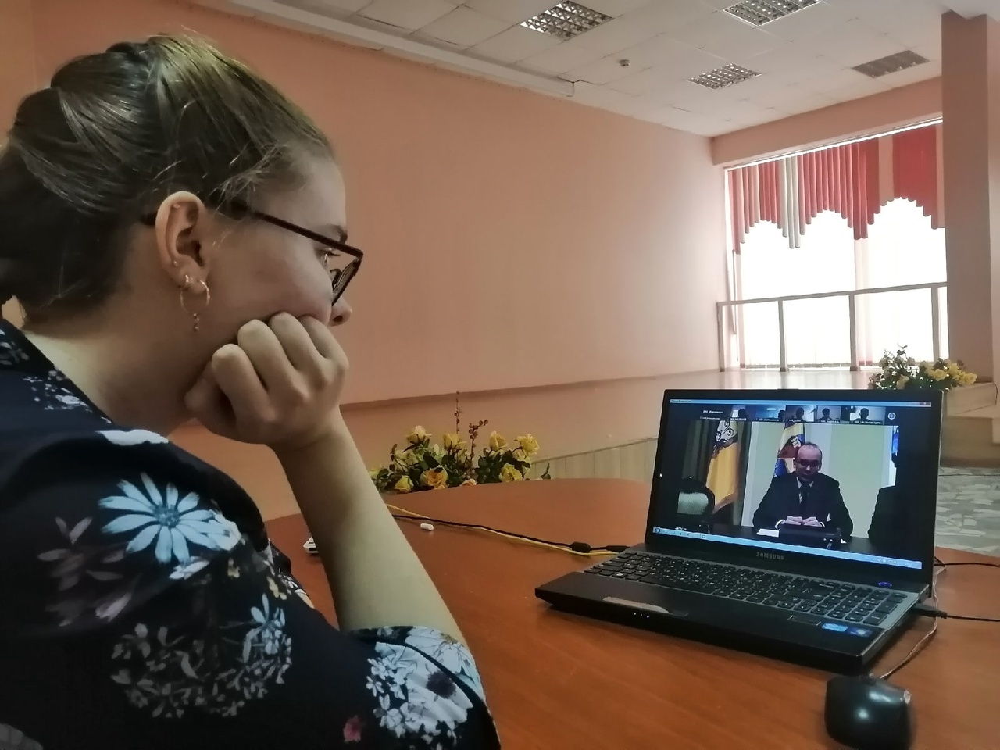
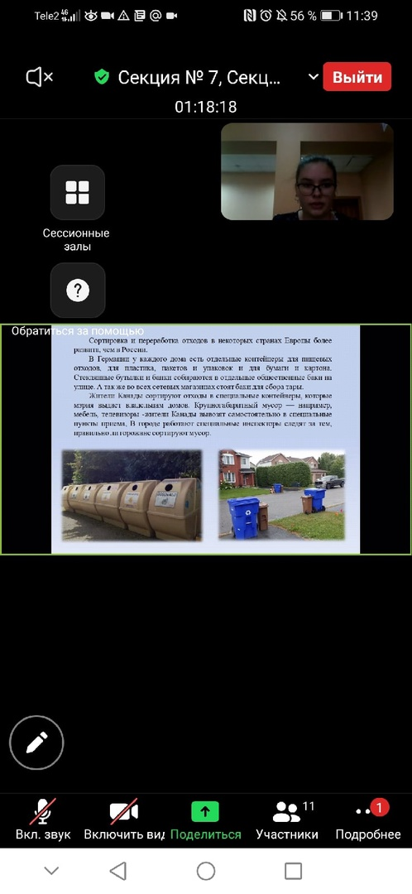

Всероссийский конкурс сайтов учащихся школ. Тема 2021 года:«Истина где-то рядом»
Пензенский государственный университет в лице кафедры «Информатика и методика обучения информатике и математике» совместно с МБОУ лицеем № 73 г. Пензы «Лицей информационных систем и технологий» организовывал VI открытый Всероссийский конкурс Веб-сайтов учащихся общеобразовательных учреждений. Учащиеся 9 и 10 классов приняли участие в конкурсе.
Всероссийский конкурс «Безопасная дорога – детям»!
Поздравляем Канельского Алексея, Васильченко Никиту и Запевалого Артема, занявших III место на Всероссийском конкурсе «Безопасная дорога - детям» в номинации «Медиа».
В ПГУ состоялась XIII областная научно-практическая конференция учащихся «Эврика»
2 февраля на базе Пензенского государственного университета в рамках областного фестиваля научно-технического творчества учащихся «Таланты XXI века» состоялся финальный тур XIII областной научно-практической конференции учащихся по конструкторской, научно-исследовательской и изобретательской деятельности «Эврика». Мероприятие проходило в онлайн-режиме.
 


